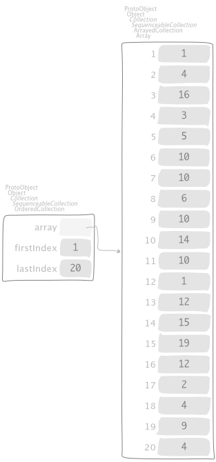
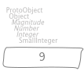

5. Randomization¶
5.1. \(k\)-th element selection¶
Let
be a collection that has
as median value. We can either compute it by sorting in \(O(n\,\log{n})\) time,
then looking for the element at the middle; or, by using a randomized approach,
"SequenceableCollection, protocol *Containers-Essentials"
kth: anInteger ranking: aBlock atRandom: aRandom
| lessThan equals greaterThan pivot k lessThanSize |
k := anInteger min: self size max: 1.
lessThan := OrderedCollection new.
equals := 0.
greaterThan := OrderedCollection new.
pivot := self atRandom: aRandom.
self do: [ :each |
each == pivot
ifTrue: [ equals := equals + 1 ]
ifFalse: [
(aBlock value: each value: pivot)
ifTrue: [ lessThan add: each ]
ifFalse: [ greaterThan add: each ] ] ].
lessThanSize := lessThan size.
^ k <= lessThanSize
ifTrue: [ lessThan kth: k ranking: aBlock atRandom: aRandom ]
ifFalse: [
(k between: lessThanSize + 1 and: lessThanSize + equals)
ifTrue: [ pivot ]
ifFalse: [
greaterThan
kth: k - lessThanSize - equals
ranking: aBlock
atRandom: aRandom ] ]
from [DPV06] page 53, that produces the interactions

where the message
"SequenceableCollection, protocol *Random-Core"
atRandom: aGenerator
"Answer a random element of the receiver. Uses aGenerator which
should be kept by the user in a variable and used every time. Use
this instead of #atRandom for better uniformity of random numbers
because only you use the generator. Causes an error if self has no
elements."
^ self at: (aGenerator nextInteger: self size)
also appears to show the pivot element choosen at each splitting. Sorting is doing far more work than looking for the middle element and don’t care about the relative ordering of the rest of elements. The recurrence of the implementation looks like
\[T(n) ≤ T\left({{3}\over{4}}\,n\right) + O(n)\]
so on any input, the algorithm returns the correct answer after a linear number of steps, on the average. The two approaches can also be compared,
"EssentialsObjectTest, protocol tests"
testInspectProbabilisticMedianRatioWithSorting
| n random collection randomized sorting middle v w |
self timeLimit: 6 seconds.
n := 1e5.
random := Random seed: 541.
collection := OrderedCollection new.
1 to: n do: [ :i | collection add: (random nextInteger: n) ].
middle := (collection size / 2) floor.
randomized := [
v := collection
kth: middle
ranking: [ :each :pivot | each < pivot ]
atRandom: random ] benchFor: 2 seconds.
sorting := [ w := collection sorted at: middle ] benchFor: 2 seconds.
self assert: v equals: w.
self assert: ((randomized iterations / sorting iterations) asFloat
between: 2
and: 3)
differing by a factor of 2 in speed, at least.